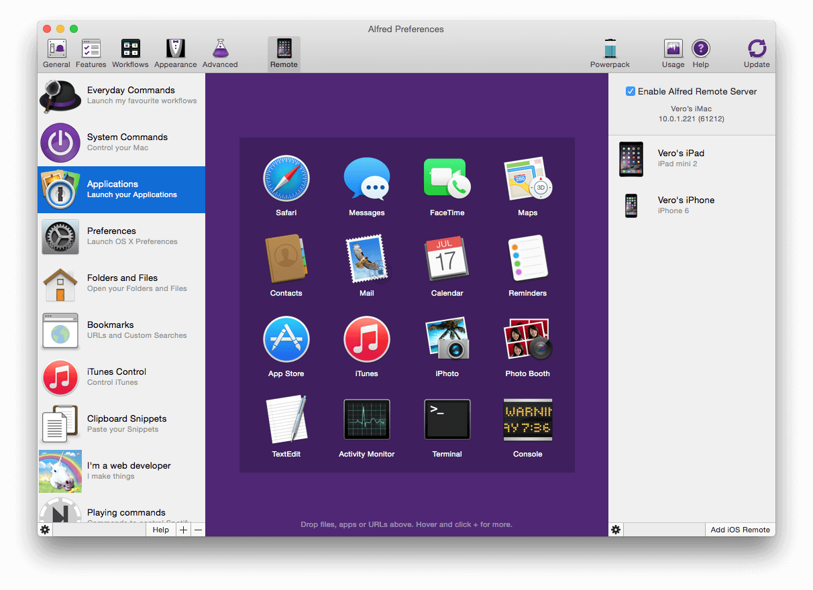

Alfred Remote for iOS
Alfred Remote is your personal command centre for Alfred for Mac, turning your iPhone or iPad into a great way to control your Mac.

If you've already installed Remote on your iOS device, follow our guide to setting up your first Remote to connect your first iOS device, so that you can start controlling your Mac using the Alfred Remote app on your iPhone or iPad.
Find out more about Remote:
- Downloading Alfred and Remote
- Getting started with Remote
- Adding Actions and Pages to your Remote
- Remote Action types
- Troubleshooting your Remote connection
Downloading Alfred and Remote
You can download Alfred for Mac from https://www.alfredapp.com. The Powerpack, also available from our website, is optional to use Remote, but opens up possibilities for workflows, clipboard, iTunes control and much more. To see which actions require the Powerpack, go down to the Remote Actions list.
You can purchase Alfred Remote from the iTunes App Store.
Minimum requirements:
- Alfred Remote is available for iPhone & iPad on iOS 7 & iOS 8.
- Alfred 3.x on 10.9+ or Alfred 2.6+ on macOS 10.8+ is required on your Mac
- You’ll need the ability to connect both your Mac and your iOS device to the same network through wired or Wi-Fi connection.
- Some advanced features require the Powerpack for Alfred 2 on your Mac; Details in the Remote Actions list below.
The Mac App Store version of Alfred (v1.2) is not compatible with Alfred Remote.
Getting started with Remote
Setting up your first Remote
Once you've downloaded and installed Remote, our guide to setting up your first Remote will walk you through connecting your iPhone or iPad to your Mac using your Wi-Fi connection.
If you're in a location that doesn't allow you to connect your iOS device and your Mac to the same network, you can alternatively connect using Bluetooth.
Add Actions and Pages to your Remote
Once you've connected your devices, learn how to add Remote actions and Remote pages, or dive in and create your own by clicking the + button at the bottom of the left column.
Bundle Remote Actions and Pages with your Workflows
Learn how to create pre-defined Remote Pages to bundle with the workflows you create, making it even easier for users to adopt your workflow.
Remote Actions
In Alfred's Remote preferences, you can add various types of actions. Find out more about each action type:
These actions can be used with the free version of Alfred for Mac:
- Show Alfred
- Launch App or File
- macOS Preferences
- Default Web Search
- Open URL which includes creating custom searches
- System Commands
These actions require a Powerpack license:
- iTunes Commands
- Clipboard Snippets
- Dispatch Key Combo
- Run Script
- Run AppleScript
- Run Terminal Command
- Run Workflow Trigger
Troubleshooting
If you're having issues connecting your Remote to your Mac, take a look at the Remote troubleshooting page for a step-by-step guide to identifying why you can't connect.